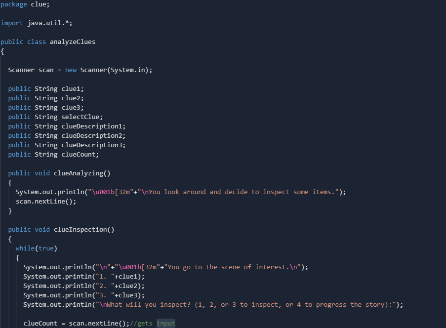

Welcome to the Palm Treechery Changelog!
On this page, you will find comparisons between our original plan for this game and how it differs from the final product.
Comparisons
Class - Main


The above slideshow showcases the Main class from our game, as well as the plan that we had for our Main class in the Class Map milestone we had handed in previously. The plan for the Main class didn't differ too much when it was implemented into our code. The main thing that was changed from the original plan was that the wildCat reference was not implemented. This was not in our final code as we tweaked our plan slightly (no spoilers here!) to the point where the reference became obsolete. We decided to make the wildCat reference obsolete as it would have been more code for us to write, and it would not have been as efficient as it could have easily been amalgamated into other elements of the game.
Class - analyzeClues
This image showcases the analyzeClues class from our game. The reason that there is no Class Map image for this particular class is because we did not anticipate to add this class initially. We had originally planned that all of the clue sections would be handled directly within the Main class, however, in an effort to make the code more efficient and simpler, we put into this class instead. The purpose of this class is to handle all 3 of the clue inspection areas within this game. We assign the actual clues themselves within the Main class and then reference those assignments in Main and print out the according and appropriate message, depending on the clue they are analyzing and which stage they are analyzing it in.
Class - characterManager


These images showcase the original plan that we had for the characterManager class compared to the final product present in our game. Most of the code in this class was changed, simply because of the fact that we decided to scrap some features that we deemed not useful to the overall story. Firstly, we changed some of the initial variables that we had declared have changed slightly. The boolean life was renamed to alive. Integer age, boolean drankRed and final String textBox were all removed as they were deemed unnecessary. Instead, we implemented String speech (used to assign what a character will say during a specific scene), char indexLetter, int index (both used to keep track of the place that the cursor is within the String) and String[] characterNames (array of names for each character that is printed out before each character speaks).
Class - trialEvent


These images showcase the original plan that we had for the characterManager class compared to the final product present in our game. Most of the code in this class was changed, simply because of the fact that we decided to scrap some features that we deemed not useful to the overall story. Firstly, we changed some of the initial variables that we had declared have changed slightly. The boolean life was renamed to alive. Integer age, boolean drankRed and final String textBox were all removed as they were deemed unnecessary. Instead, we implemented String speech (used to assign what a character will say during a specific scene), char indexLetter, int index (both used to keep track of the place that the cursor is within the String) and String[] characterNames (array of names for each character that is printed out before each character speaks).
Class - Child Classes


{kind=link}
This final slideshow showcases all of the child classes in our game for each of the characters that we have in the game. The code for each of the classes remains relatively the same throughout the building of the code. The only thing that we decided to change for the Matilda class was that we got rid of the Intensity and angryUp code since it was deemed useless to the overall plot of the story. Furthermore, for redDrink, we got rid of the drink method as it did not contribute to the overall story and since we tweaked the character of Red Drink significantly between these two processes, leaving no point to the drink() method. Finally, for each child class, we incorporated the speak() method into their specific class, allowing for the proper methods to be called within the appropriate class.